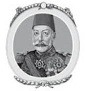
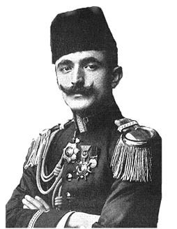
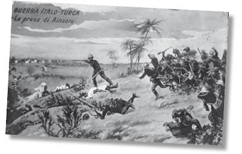
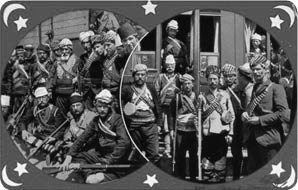
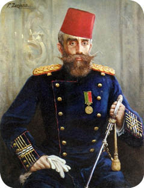

XXII : JÖN TÜRKLER
1909-1914
Mehmed Reşad, V. Mehmed ismiyle, altmış dört yaşındayken erkek kardeşinin ardından sultan ilan edilmiştir. Yaşamının tamamını bir mahkûm olarak geçirmiş ve bu mahkûmiyetin otuz dört yılı da kardeşinin yakın gözetimi altında geçmiştir. Mehmed’in arkadaşlarının olmasına ve hatta gazete okumasına bile izin verilmemiştir. Hizmetkârları, Abdülhamid’in emri altında casus olarak çalışmıştır. Mehmed, hayatını haremine adamıştır. Sahip olduğu idrak kabiliyetini kaybetmesi de şaşırtıcı değildir. Tahta çıkışının üzerine Mehmed’i birçok kez görme fırsatı yakalamış bir diplomat Mehmed’i şu şekilde tasvir etmiştir:
V. Mehmed’in görünüşü hiçliği anlatır. Çukur gözler ve derin kırışıklıkları olan bir yüzle, minyon ve kambur bir adam, hastalık kokan bir obezite ve sarı ve yağlı bir ciltle hiç kuşkusuz etkileyici değildir. Çehresinde, zekâ pırıltısı ya çok azdır ya da hiç yoktur, karanlık bir köşede kendisini bıçaklayarak öldürmek için gizlenmiş bir suikastçı bulmaktan korkarmışçasına bakan o ürkek bakışlar gözlerinden hiç eksik olmaz… Abdülhamid, V. Mehmed’ten nefret etmiş ve onu hakir görmüştür; fakat onu öldürmekten korkmuştur, bu korku onun yerini daha güçlü birinin alması korkusu olabilir.

Mehmed Reşad
Yeni Sultan, kardeşini tahtından etmiş olan komploların bir parçası olmamıştır. Etrafındaki kimse ona bu önemli sırrı vermemiştir. Rivayete göre; Abdülhamid’in, siyasetle ilgilendiğine dair şüphelerini dindirmek için V. Mehmed aptal taklidi yapmıştır. Sürekli olarak, öldürülme korkusu içinde yaşamıştır. Bu yozlaşmış sultanın bir portresi, bir zamanlar görkemli olan Osmanlı milletinin çöküşünü kelimelerden daha iyi anlatacaktır. Devrimin mimarı olan bu kurnaz adam, irade sahibi bir kişidense imparatorluğun sözde liderinin niteliksiz birinin olmasının amaçlarına daha uygun olacağını düşünmüş olabilir.
Gericilerin bozguna uğratılması ve Abdülhamid’in tahttan indirilmesinin ardından, 1909 yılında, imparatorluğun yönetiminde yenilikler yapma fırsatı yakalamış olan Jön Türkler diğer bir güç sahibi topluluktur. Fakat bu fırsatı kötüye kullanmışlardır. Kısa zaman içinde, komitede birbirine taban tabana zıt iki grup arasında ayrılıklar olduğu ortaya çıkmıştır. Bu iki gruptan üstün gelen, hedef ve yöntemlerinde aşırı milliyetçi olan ve yerel geleneklerle milliyet farklarını göz önünde bulundurmaksızın imparatorluk çapında her şeyi Türkleştirerek birliği güçlendirmeyi amaçlayan şovenist grup olmuştur. Yalnızca kendi ana dillerini konuşan birçok tâbi ırka Türkçeyi dayatmaya çalışmışlardır. Arnavutluk’ta bulunan okullarda Arnavutça’nın, Arabistan’da bulunan okullarda, İslam’ın kutsal dili olan Arapçanın öğretilmesini yasaklamışlardır. Ordu için zorunlu görevi getirmişler ve Balkanlar’da yaşayan Hıristiyanları askerlik hizmeti yapmaya zorlamışlardır; fakat bu durum binlerce genç Bulgar, Rum ve Sırplarla Makedonya sakinlerinin ülkeyi terk ederek komşu ülkelere sığınmasına neden olmuştur. Jön Türkler, binlerce düşük gelirli Müslüman Bosnalıyı Makedonya’ya göç etmeye teşvik ederek Makedonya’daki Müslüman nüfusu artırma fırsatından yararlanmışlardır. Bu insanlar, kargaşa ve düzensizliğe neden olmuştur. İstihdamları sağlanmamıştır. Bölgede, yerel yetkilileri, Abdülhamid hükümdarlığının rezilliklerini aşmasa da üyelerinin keyfi zorbalıklar yaptığı Jön Türk Komiteleri kurulmuştur. Abdülhamid’in istibdadı İstanbul’da kırılmış ve büyük öfkeye neden olan casusluk sistemi bastırılmış; fakat vilayetlerde yüzlerce yerel Abdülhamidler ortaya çıkmıştır.
Başkentteki yönetim, idarenin en küçük detayına kadar Abdülhamid’in yöntemlerini uygulamıştır. İmparatorluktaki Hıristiyan vilayetlerin durumu daha kötü olamayacak bir vaziyettedir. Ayrıca, İstanbul’da İngiltere’ye ve anayasasına duyulan sevgi azalmaya başlamıştır. Nedeni ne olursa olsun, Osmanlı’da İngiliz etkisinin yok olmaya yüz tuttuğu, Almanya’nın etkisinin ise hızla arttığı aşikârdır. Birinci Dünya Savaşı’nda Almanya için çok değerli olan askerî ittifakın temelleri atılmıştır. Bu döneme sadrazamların sürekli olarak değişmesi damga vurmuştur, bu da iki gruba ayrılmış olan Jön Türklerden hangi grubun üstün geldiğine göre şekillenmiştir.
İmparatorluk parçalanma sürecine girmeden kısa süre önce çakallar kendilerine pay çıkarmak için etrafını kuşatmıştı. Jön Türkler, bu çakallara direnme konusunda, kurnaz ve hilekâr diplomasisi sayesinde Berlin Kongresi’nden sonra geçen yıllar boyunca bu çakalları uzak tutmayı başarmış olan Abdülhamid’ten daha başarısız olmuş; fakat Jön Türklerin egemenliği altında yaşanan felaketlerin kısmen Abdülhamid’in uzun süren kötü yönetimi dönemi boyunca bastırılmış olan dertlerden kaynaklandığı söylenebilir.

7 Ekim 1908 isyanından kısa süre sonra, yeni anayasa çalışmaları başlamadan hemen önce, Avusturya-Macaristan hükümeti, Berlin’de Büyük Güçler tarafından dayatılan anlaşma koşullarını hiçe sayarak, karışıklıktan yararlanmış ve Bosna Hersek’i kendi topraklarına kattığını ilan etmiştir. Bu durumu gerekçelendirmek için bir girişimde bulunulmamıştır. Söz konusu ilhak, her iki vilayetin halkı için de çok fazla değişiklik getirmemiştir. Çünkü buradaki halk halihazırda Avusturya-Macaristan egemenliği altındadır. Temel değişiklik ise Bosnalı askerlerin Osmanlı hükümdarlığını simgelemek için giydikleri fesleri çıkarmaları olmuştur. Diğer yandan, bu ilhak Türkler arasında imparatorluklarına yapılan bir hakaret olarak algılandığından büyük bir öfkeyle karşılanmıştır. Ayrıca, Rusya’da da kara bulutlara sebep olmuş ve 1914 yılındaki Birinci Dünya Savaşı’nın patlak vermesinde rol oynamıştır. Avusturya hükümeti Sancak’taki Yeni Pazar’dan ayrılmış ve Osmanlı borcunun yaklaşık dört milyon sterlinlik kısmını üstlenmeyi kabul etmiştir. İmtiyazlar kabul edildiği için Osmanlılar bu hakareti görmezden gelmek zorunda kalmıştır. Bulgaristan Prensi Ferdinand da Avusturya-Macaristan hükümetinin izinden gitmiştir. Kendisini bağımsız hükümdar ilan etmiştir. Bu da kendi tebaası için pek bir farklılık yaratmamıştır. 12 Ekim gününde, Girit Kongresi adanın Yunanistan ile birleştiğini ilan etmiştir.
Osmanlı İmparatorluğu’na bir tokat da hiç beklenmedik bir köşeden, Trablus’a ani ve sebepsiz bir saldırı düzenleyen İtalya’dan gelmiştir. Afrika’daki bu vilayet hiçbir zaman özerk olamamıştır. Trablus, doğrudan İstanbul’dan yönetilmek üzere Osmanlı İmparatorluğu’nun bir parçası olmuştur. Trablus ve kıyıdaki diğer bölgelerin nüfusu tamamen Müslüman Türkler ve Endülüslerden, iç bölgeler ise yarı bağımsız Araplardan oluşmaktadır. Yerlilerin hükümet değişimi gibi bir talepleri olmamıştır. İtalya’nın, ithamda bulunmuş olmasına rağmen, bu bölgede yaşayan birkaç vatandaşı adına şikâyette bulunmasının geçerli bir nedeni yoktur. Bu durum, tamamen coğrafî ve ekonomik olarak İtalya’nın daha fazla söz hakkına sahip olduğu Tunus konusunda Fransa’ya duyulan kıskançlıkla ateşlenmiş olan bir saldırıdır. Fransa Cumhuriyeti ve Büyük Britanya İtalya’ya karşı çıkmamış ve İtalya bu iki imparatorluğun müttefiki olarak kalmıştır.
1910 yılının sonuna kadar İtalya, Türk İmparatorluğu’nun bütünlüğünün sürdürülmesine dair olan arzusunu sürekli olarak dile getirmiştir. İtalya’nın, Trablus’u ele geçireceğine dair söylentiler çıktığında, İtalya dışişleri Bakanı, 2 Aralık 1910 gibi her şey için geç olan bir tarihte, İtalya Meclisi’nde bu söylentileri kesinlikle reddetmiştir. Bakan, “Biz Osmanlı İmparatorluğu’nun bütünlüğünü korumasını istiyoruz ve umarız Trablus her zaman Türklerin egemenliğinde kalır.” demiştir. Bu tarihten sonra, iki ülke arasındaki ilişkileri zedeleyecek çok az şey yaşanmıştır. Fakat 1911 yılının Eylül ayında, İtalya hükümeti, Trablus’u işgal etme niyetini bildirmiştir. 26 Ekim’de, bu bölgeyi topraklarına katma niyetini Avrupalı güçlere bildirmiştir. Bu amaçla, elli bin askerden oluşan bir orduyu bölgeye göndermiştir. Donanması, Adriyatik’te bir Türk kenti olan Preveze’yi bombalamış ve Türk donanmasını Çanakkale’de sığınacak yer aramaya zorlamıştır. Ayrıca, Ege Denizi’ndeki birçok adanın egemenliğini de ele geçirmiştir.
Böylece, Osmanlıların aleyhine bir durum oluşmuştur. Abdülhamid yıllar boyunca donanmasını ihmal etmiştir. Kendi selefinin tahttan indirilmesinde rol oynadığı için donanmaya her zaman garez duymuş ve donanmanın silahlarının kendi sarayına doğrultulacağından korkmuştur. Bütün paşaları arsında en çok yolsuzluk yapan ve en aç gözlü olan bahriye nâzırının, savaş gemilerinin bakımı için ayrılan bütçeyi kendisi için kullanmasına izin vermiştir. Yıllar boyunca, savaş gemileri Haliç’ten ayrılmamıştır. Abdülaziz döneminde Avrupa’nın en güçlü üçüncü donanması olan Osmanlı donanması, Afrika’ya bir İtalyan ordusunun çıkmasını imkânsız kılabilirdi. Abdülhamid’in her zaman güçlü tuttuğu Trablus karargâhı Jön Türkler tarafından sayıca azaltılmıştır. Savaşın ilanından sonra, İtalya’nın denizin hâkimiyetini ele geçirdiği zaman, karargâhı güçlendirmek çok güç olmuş, bu durum Britanya hükümetinin, hâlâ Osmanlı’ya tabii olan Mısır’ın tarafsızlığını ilan edip Türk birliklerinin Trablus’a geçişini yasakladığında daha da güçleşmiştir.

Trablusgarp Savaşı’nı Gösterir Kartpostal
Bütün bu engellere rağmen, Osmanlılar, savaşı terk etme konusunda eğitimsiz olan İtalyan birliklerin çok az ilerleme kaydettikleri iç bölgelerdeki Arapların yardımıyla Afrika’daki toprakları için kahramanca savaşmıştır. Savaş, 1912 yılının Ekim ayına kadar sürmüş ve Osmanlılar ülkelerine daha yakın bir köşeden gelen bir tehlikeyle karşı karşıya kaldıklarında ancak sonlanmıştır.
İtalya ile gerçekleştirilen savaş, hatırı sayılır sayıda Türk kuvvetinin Trablus savunmasında görev alması ve Türk limanlarının İtalyan donanması tarafından kapatılması Osmanlıların birliklerini doğrudan Asya’dan Balkan devletlerine göndermesini zorlaştırdığı, Osmanlıların Avrupa’da ellerinde kalan vilayetlerinde yaşayan ve açıkça isyan etmeye hazır olan Hıristiyanların adına Yunanistan, Bulgaristan ve Sırbistan’ın müdahalesini hızlandırdığı kuşkusuzdur.
Söz konusu Hıristiyan vilayetlerinin durumu Jön Türklerin egemenliği altında iyileşmemiş aksine daha da kötüleşmiştir. Valiler ve Osmanlı soyundan gelen diğer yöneticiler eskiden oldukları gibi yolsuzluklar yapmaya, açgözlü ve keyfi davranmaya devam etmiştir. Halkın can ve mal güvenliği yoktur. Bölgeyi korumaya gönderilmiş olan Türk askerleri Hıristiyan köylerini talan etmiştir. Bazen Yunan bazen de Bulgar üniformaları giyen eşkıyalar şehri yakıp yıkmıştır. Jön Türkler, bir kısmı için Osmanlıların mutabakata vardıkları, Avrupa kuvvetleri tarafından önerilen reformları yerine getirmek için hiçbir çaba göstermemiştir.
Abdülhamid’in egemenliği altında otuz yıl boyunca olduğu gibi bütün planlar hükümsüz kalmaya devam etmiştir. Jön Türkler, her şeyi Türkleştirme çabalarıyla ve Hıristiyan halka getirmiş oldukları zorunlu askerlik göreviyle yeni yeni zorluklar eklemiş ve daha fazla şikâyete sebep olmuştur. Makedonya’nın fiziksel konumu, buradaki halkın bu kötü yönetime ve zorbalığa boyun eğmesini imkânsız hale getirmiştir. Macaristan’ın komşuları, Rusya ve diğer Avrupa güçlerinin yardımıyla Türk hâkimiyetinden kurtulup özgürlüklerine kavuşmuş olan Bulgarlar, Sırplar ve aynı soydan Yunanlardır. Yunanistan, Bulgaristan ve Sırbistan halkları halihazırda o nefret edilen esaretin altında olan hemşerilerini desteklemiştir.
Anlaşma yükümlülükleri gereğince komşu devletlerin düzeni sağlama ve adil yönetimi garanti altına alma amacıyla yaptıkları müdahale gerekçelendirilecekse, bahsedilenler buna örnek olabilir. Buhran, Makedonya Koçana’da Bulgarların ve Karadağ sınırında Sırpların öldürülmesiyle baş göstermiştir.
1912 yılının başlarında, özellikle Yunanistan’ın vatansever Başbakanı M. Venizelos’un isteğiyle, Yunanistan, Bulgaristan ve Sırbistan hükümetleri arasında Makedonya’ya yapılacak silahlı müdahale için müzakereler başlatılmıştır. Tarihte ilk defa bu üç ülke Türk İmparatorluğu’na karşı birleşmiştir. Türkleri bozguna uğratma ve neredeyse Avrupa’da sahip oldukları bütün topraklardan çıkarma gayelerinde başarılı olmalarına rağmen, ilerleyen sayfalarda bu büyük başarının ardından birtakım olumsuz sonuçlarla bu birliğin dağıldığı görülecektir.
18 Mart 1912 gününde, Bulgaristan ve Sırbistan arasında, Türklerle savaşa girmeleri halinde karşılıklı askerî destek sağlanacağına dair bir anlaşma imzalanmıştır. Ayrıca, Makedonya’nın ele geçirilen kısımları bu iki devletten hangisine yakın olursa onun topraklarına katılacağına ve askerî müdahaleye uğrayacak olan toprakların Rusya’nın tahkimiyle iki ülke arasında paylaştırılacağına dair gizli bir madde bulunmuştur. Bu madde, müdahalenin toprakları ele geçirme maksadının olduğunu göstermiştir. İki ay sonra, Yunanistan ile Bulgaristan arasında, Türklerin saldırısına maruz kalmaları halinde veya Türklerin hakları ihlal etmeleri durumunda birbirlerine yardım gönderecekleri konusunda bağlayıcılığı olan bir anlaşma imzalanmıştır. Bu anlaşmada, savaştan sonra ganimetin nasıl paylaştırılacağına dair bir madde yer almamıştır. Karadağ daha sonra İtilaf Devletleri’ne katılmış ve aslında her zaman Türklere karşı savaşma isteğinin olduğu anlaşılmıştır.
Büyük Güçler bu birliklerin oluştuğunu ve savaşın kaçınılmaz olduğunu öğrendiğinde, fırtınayı dindirmek ve barışı sağlamak için ellerinden geleni yapmıştır. 25 Eylül’de bütün kuvvetler adına Rusya ve Avusturya büyük bir protesto başlatmıştır. Türklerin geriye kalan Hıristiyan vilayetlerinde düzeni sağlamak ve adil yönetimi gerçekleştirmek için önceden düzenledikleri, fakat başarısızlığa uğramış olan Berlin Antlaşması’nı tekrar hayata geçirmeye çabalamışlardır. Berlin Antlaşması’nın yirmi üçüncü maddesine binaen, bu vilayetlerin yönetiminde vaat edilen reformların yerine getirilmesi için ısrarcı olmuşlar; fakat antlaşmayı kapsamındakilerin nazarında hükümsüz kılarak, bu reformların sultanın egemenliğini kısıtlamayacağı veya Osmanlı İmparatorluğu’nun bütünlüğünü zedelemeyeceğine dair şart koşmuşlardır.
Müttefik Balkan devletleri, 15 Ekim’de vakur bir bildirimle, bu kuvvetlerin tavsiyelerini uygulamayı reddetmiştir.
Balkan devletleri hükümetleri, Türkler tarafından vaat edilen onlarca reformdan sonra, samimi ve bütüncül bir şekilde yürürlüğe konması halinde Osmanlı İmparatorluğu’nun Hıristiyan nüfusunun sefil durumunu gerçekten iyileştirecek olan radikal ve net reformları elde etmeye çalışmamanın zalimce olduğunu düşünmüştür.
Aynı gün, bütün detayları bildirilmiş olan reformların yürürlüğe konması konusunda ısrarcı olan bir ültimatom hazırlayarak Osmanlı İmparatorluğu’na göndermişlerdir.
Osmanlıların bu teklifleri kabul etmesi durumunda, İmparatorluğun vilayetlerinde düzen ve huzur ortamı tekrar sağlanacak ve şimdiye kadar Osmanlıların keyfi ve provokatif tutumlarından mustarip olmuş bölgede Türkler ve Balkan devletleri arasında arzu edilen barış güvence altına alınacaktır.
Uygulanması konusunda ısrarcı olunan reformlar arasında, imparatorluğun vilayetlerinde etnik özerklikten feragat edilmesi yer almıştır. Ültimatom, Osmanlılara gönderilmiş ve Osmanlılar bunu savaş ilanı olarak ele almıştır. İlk eylemleri, önemli bölgelerinde daha ciddi savaşlardan kaçınmak için İtalya ile anlaşma sağlamak olmuştur. 15 Ekim’de, Osmanlıların birliklerini Trablus’tan çekmeyi kabul ettikleri ve böylece bu bölgenin İtalya’nın topraklarına katılmasını tanıdıkları bir barış anlaşması imzalanmıştır. Diğer yandan, İtalya da Ege Denizi’nde işgal ettiği adalardan çekilme konusunda mutabık olmuş; fakat bu mutabakat yerine getirilmemiştir.
Bu esnada, Balkanlar’da düşmanlıklar çoktan başlamıştır. Karadağ, 8 Ekim tarihinde savaş ilan etmiştir. Diğer üç devlet de 18 Ekim tarihinde Karadağ’ı izlemiş ve neredeyse aynı gün hepsi birden Osmanlı İmparatorluğu’nu işgal etmek için ordularını sınırlara göndermiştir. Osmanlıların Hıristiyan vilayetlerinin daha iyi bir şekilde yönetilmesi arzusunun yanı sıra, müttefik devletler açısından şüphesiz gizli bir maksat da bulunmaktadır. Yunanistan, Ege Denizi’nde Girit ve diğer adalara göz koymuş ve sınırlarını ana topraklara kadar genişletmeyi umut etmiştir. Bulgaristan, San Stefano Antlaşması’nda belirtilen büyük Bulgaristan’ı hedeflemiştir. Sırbistan, Stephen Dushan egemenliğinde geniş sınırlarının eski haline dönmesini istemiş ve hem Ege Denizi’ne hem de Adriyatik’e erişmeyi hedeflemiştir. Karadağ, Arnavutluk’un bir kısmını ele geçirmeyi ve Adriyatik’e uzanmayı arzulamıştır. Her bir devlet, zalimce yönetim ile zorbalıktan muzdarip ve yardım bekleyen akraba ırklardan oluşan büyük birer nüfusa sahiptir. Fakat bütün ümitlerini gerçekleştirmeleri veya asıl sonuca ulaşmaları olanak dışıdır.
Müttefik kuvvetin silahlı yedi yüz bin adamı vardır. Osmanlıların ise Avrupa’da dört yüz binden fazla adamı vardır. Fakat Asya’da büyük ordulara sahiptir ve bu orduların toplamı müttefiklerin kuvvetlerinden çok daha fazladır. Avrupa’daki Osmanlı ordularının iyi bir savaş çıkaracağı veya en azından Asya’daki birliklerinin gelmesi için vakit kazanacağı beklenmiştir.
Yunan ordusu, Almanya’da askerî eğitim almış olan Prens (ve daha sonra Yunanistan Kralı) Konstantin komutası altında kuzey sınırlarını geçmiş ve dört gün içinde, 22 Ekim gününde, Hasan Paşa komutasındaki Türk ordusuyla Sarandoporus’ta karşılaşmıştır. Türkler, güçlü bir konuma sahip olmuştur ve sayı bakımından da Yunan ordusundan biraz azdır. Buna rağmen, Yunan ordusu tarafından bozguna uğratılmış ve ertesi gece geri çekilmeye zorlanmıştır. Bir sonraki gün, Yunanlar tekrar saldırıya geçmiştir. Sarandoporus’ta cesaretleri kırılmış ve uzun süren gece yürüyüşünden bitap düşmüş olan talihsiz Türkler kendilerine hiçbir savunma imkânı bırakmayan bir vadide gafil avlanmıştır. Dehşete düşmüş ve mücadele gücü kırılmış bir vaziyette düşmanlarından kaçmıştır. Mühimmat ve bineklerinin bir çoğunu da arkalarında bırakmışlardır.

Balkan Savaşı’na Katılan Yerel Birlikler
Düştükleri dehşete rağmen, geri çekilmiş olan Türkler yolları üzerindeki bahtsız Hıristiyanlardan intikam almaya vakit bulmuş ve onları acımasızca öldürmüştür. Osmanlı ordusundan geriye kalanlar Karaferye’ye çekilmiş ve burada on dört yeni tabur kendilerine katılmıştır. 28 Ekim’de Yunan ordusu ilerleyişine devam etmiş ve Karaferye’de, güçlü bir konuma sahip olan Osmanlılarla karşılaşmıştır. Savaş çok uzun sürmemiştir. Türkler bir kez daha Yunan silahlarıyla bozguna uğramıştır. Osmanlı askerleri yenik düşmüş bir vaziyette tekrar kaçmıştır. Bu yenilgilerden sonra, Osmanlı ordusundan geriye kalanlar 3 Kasım gününde Selanik’e birkaç mil uzaklıktaki Vardar Nehri’ni geçmiştir. 8 Kasım gününde şehir, ihanet şüphesi olmadan, Yunanlılara teslim olmuştur. Hasan Paşa ve ordusunun geri kalanı olan yirmi beş bin asker tutsak olarak alınmıştır. Ertesi gün, Trakya’daki esas birliklerinden ayrılmış olan bir Bulgar bölüğü uzun bir yürüyüşten sonra bu önemli şehrin ele geçirilmesinde kendilerine de bir pay çıkarma umuduyla Selanik’e gelmiştir. Kumandanlarının talebi üzerine, Yunanlar iki Bulgar alayının şehre girmesine izin vermiştir. Bu kısıtlamaya rağmen, bölgeye on alay gönderilmiş ve bu da başka bir huzursuzluğa neden olmuştur.
Yunanlılar bu büyük ve beklenmedik başarıları yakalarken Sırplar da kuzeyden ilerleyeme devam etmiştir. Zeki Paşa komutasındaki yüz bin kişiden oluşan bir Türk ordusu Sırplarla karşılaşmak için Vardar Ovası’nı geçmiştir. Sayı bakımından eşit olan iki ordu, Yunanlıların Sarandoporus’taki zaferinin ertesi günü, 23 Ekim tarihinde, Kumanova’da karşılaşmıştır. Türkler, makineli tüfek, uçak ve telsiz gibi bütün modern savaş ekipmanlarıyla desteklenmesine rağmen bunları kullanacak yetenekte bir birliğe sahip değildir. Mühimmatları, Alman çalışmasının en iyi sonucudur ve Sırpların cephanesine oranla sayı bakımından üstündür. Fakat Sırpların kullandığı Fransız silahları ise çok daha iyi performansa sahiptir. En kötüsü ise Türklerin levazım hizmetlerinin ilkel bir niteliğe sahip olmasıdır. Askerlerinin, yolları üzerindeki köylülerden aldıklarıyla beslendikleri ve dolayısıyla askerlerin yetersiz beslenmesiyle sonuçlanan bir yöntem izlemişlerdir. Hava oldukça soğuktur ve askerlerin yalnızca yazlık kıyafetleri vardır. Askerlerin en iyisi bile boş bir mide ve ince kıyafetlerle savaşacak durumda değildir. Nihayetinde, bu büyük savaştaki gayretli direnişe rağmen, Türk safları Sırpların olağanüstü piyade sınıfı tarafından delinmiştir. Bu da Türklerin tarumar edilmesi ve süratle geri çekilmesiyle sonlanmıştır. Türk ordusu, yüz yirmi silahtan oluşan bütün cephanesini kaybetmiştir. Yüz bin askerin içinden yalnızca kırk bini hayatta kalmıştır. Sırbistan’ın eski başkenti olan Üsküp Sırplar tarafından ele geçirilmiştir. Başka bir Sırp birliği ise Adriyatik’e uzanmış ve Dıraç’ı ele geçirmiştir.
Kumanova’daki şiddetli ve belirleyici bir role sahip olan bu savaştan sonra, Türk ordusundan geriye kalanlar Vardar Ovası’ndan Veles’e çekilmiş ve buradan, şehri Yunanlılardan kurtarma şansları varken Selanik’e gitmek yerine batıya Manastır yolundaki Prilip’e gitmiştir. Kısa bir süre sonra Sırplar, Türk ordusunu takip etmiş ve Türklerin oldukça güçlü bir mevkide oldukları bir noktada Prilip’te tekrar karşılarına çıkmıştır. Prilip zor kullanarak alınmış ve bu da Sırp piyadelerinin gücünün bir delili olmuştur.
Daha sonra Türkler Manastır’a çekilmiş ve burada kendilerine destek bulmuştur. 17 ve 18 Kasım tarihlerinde Manastır, Türklerin on bin aserinin tutsak olarak alınarak tekrar bozguna uğratıldığı büyük bir savaşa sahne olmuştur. Türk ordusundan geriye kalanlar Arnavutluk’a çekilmiş ve Sırplar da Türklerin peşine düşmekte geç kalmıştır. Bir sonraki bahar mevsiminde, Türk ordusu Adriyatik üzerinden deniz yoluyla İstanbul’a ulaşmıştır. Sırplar, bundan daha fazla zafer kazandıkları bir sefer yaşamamıştır. Zeki Paşa’nın ordusu tamamen yok edilmiştir.
Makedonya’da bu önemli olaylar yaşanırken Bulgarlar da doğuda aynı başarıları göstermiştir. Bulgarlar, 18 Ekim tarihinde büyük bir orduyla Trakya’yı işgal etmiş ve 22 Ekim günü Kırklareli’nde Türk ordusuyla karşılaşarak iki günlük bir muharebe sonucunda Türkleri bozguna uğratmıştır. 28 Ekim’de, Lüleburgaz’dan Vize’ye kadar saf tutmuş olan Nazım Paşa komutasındaki ana orduyla savaşmıştır. Türkler kararlılıkla direnmiş fakat Bulgarların kırk sekiz saat boyunca sürdürdükleri şiddetli saldırılar sonucunda direnmeyi bırakmış ve büyük bir düzensizlik içinde kendilerini İstanbul’u Karadeniz ile Marmara arasındaki on dokuz millik mesafeyi, takviye hattıyla koruyan Çatalca sınırının gerisinde bulana dek kaçmıştır. Trakya’ya ilerleyişleri sırasında gayrinizami Bulgar vatandaşları tarafından desteklenen Bulgar askerleri, Türklerin geçmişte yaptıkları tüm zalimliklere rakip olacak derecede korkunç işkenceler gerçekleştirmiştir.
17 Kasım günü, Bulgarlar büyük bir gayretle Çatalca’ya saldırmış; fakat Türkler bölgeye Asya’dan yeni birlikler göndermiştir. Saflar Alman silahlarıyla başarılı bir şekilde savunulmuş ve art arda gelen birçok saldırı püskürtülmüştür.
3 Aralık günü, Büyük Güçlerin isteği üzerine Osmanlılarla Bulgarlar arasında ateşkes imzalanmıştır. Fakat Yunanistan ve Karadağ ile savaş devam etmiştir. Söz konusu seferlerin sonunda Türkler her savaşta Yunanlar, Sırplar, Makedonlar ve Karadağlar tarafından yenilgiye uğratılmıştır. Türkler, Makedonya ile neredeyse Trakya ve Epirus’un tamamından çıkarılmıştır. Fakat Edirne, Yanya ve Üsküdar hâlâ Türklerin elindedir. Türk askerleri ancak bu şehirlerin veya Çatalca saflarının savunmasında o zamana dek kendilerini meşhur kılan özellikleri olan sebat ve cesareti göstermiştir. Fakat savaş meydanlarında düşmanla karşılaştıklarında her zaman bozguna uğratılmışlardır.
Türk ordusunun bu çöküşünün bir şahidi olan Mr. Crawford Price orduyla ilgili şunları kaleme almıştır:
Kahramanlık hikâyelerinin askerî tarihin en heyecanlı sayfalarını dolduran bu savaşçı milletin, düne kadar kendi çıkarlarını ilgilendiren sorular tartışıldığı ve uygulandığı zaman seslerini yükseltmeye cesaret edemeyen hakir Sırp ve Yunanların saldırılarından yenik düşmüş bir ayaktakımına dönüşmüş olması akıl almaz bir durumdur. Yunanlar 1897’nin lekelerini başarılı bir şekilde silmiştir. Örgütlenme, yöntem ve hatta kişisel cesaret açısından Türklere üstün gelmişlerdir... Osmanlı askerlerinin cesaretsizliğine çok fazla değinmek istemiyorum. Yenilgiden sonra Türk birliklerinin yaşadığı acı moral bozukluğunu tarif edecek kelime bulamıyorum.33
33 The Balkan Cockpit, G.M. Crawford Price, s. 102.
Osmanlı ordularındaki söz konusu cesaretsizliğin ana sebepleri arasında askerlerin karnının doyurulması için gerekli hazırlıkların yapılmaması yer almıştır. Birliklerin üç veya dört gün aç bırakılması bir kuraldır. Diğer bir sebep ise Avrupa’da gerçekleştirilen seferde bulunan Osmanlı ordularının bünyelerinde çok fazla ilk defa mecburi askerlik görevlerini yapan yerli Hıristiyanlara yer vermiş olmasıdır. Bu askerler, düşmandan yana olmuş ve Türk safları kırıldığında çil yavrusu gibi kaçışarak düşmana yardımcı olmuşlardır. Hayatta kalan askerler de evlerine kaçmıştır.
Ateşkesin tamamlanmasından sonra, 1912-1913 kışı barış için Londra’da gerçekleştirilen konferanstaki beyhude müzakerelerle geçmiştir. Başarısızlığın esas sebebi Edirne olmuştur. Kalıcı barış şartı olarak Bulgarlar Edirne’nin kendilerine bırakılmasını istemiştir. Osmanlılar başlangıçta bu şartı gerçekleştirmeye niyetsiz değildir. Fakat İstanbul’da askerî bir isyan patlak vermiştir. Ordunun içinden Enver Paşa başkanlığındaki temsilciler heyeti Edirne’nin teslim edilmesine karşı çıkma hedefiyle sorunun müzakere edildiği Bakanlar Meclisi’ne girmek istemiştir. Harbiye Nâzırı Nazım Paşa ve yaverleri bu baskına karşı koyarken öldürülmüştür. Bunun üzerine sadrazam görevinden ayrılmıştır. Sadrazamlığa, ilk hareketlerinde Jön Türklere sadık olan Mahmud Şevket getirilmiştir. Mahmud Şevket, Edirne’nin Bulgarlara bırakılmasını reddetmiştir. Böylelikle, Londra’daki müzakereler sonlandırılmıştır.
4 Ocak 1913 günü Bulgarlar ateşkesin sona erdirildiğini duyurmuş; fakat daha sonra savaş tekrar başlamıştır. 4 Şubat gününde, elli bin Sırp askeri tarafından desteklenen Bulgar ordusu Edirne’ye saldırmıştır. Aynı gün, Bolayır yakınlarında Türklerle Bulgarlar arasında bir savaş yaşanmış, Türkler bozguna uğratılmış ve Bulgarlar Çanakkale’nin egemenliğini alma tehdidiyle bu önemli kaleyi ele geçirmiştir. Ayrıca, Yunanlar da tekrar savaş ilan etmiştir. 6 Mart tarihinde Epirus’a ordu göndermiş, otuz üç bin Türk’ü tutsak alıp büyük miktarlarda silah ve mühimmatı ele geçirerek Yanya’yı ele geçirmiştir. Mart’ın 10’unda ise Yunan donanması Samos Adası’nı ele geçirmiştir.

Mahmud Şevket Paşa
28 Mart tarihinde Bulgarlar Edirne’yi ve yirmi bin askerden oluşan Osmanlı karargahını ele geçirmiş ve 21 Nisan’da Karadağlar kendi ülkelerinin başkenti ilan ettikleri Üsküdar’ı ele geçirmiştir. Bu büyük kayıplardan sonra Osmanlılar anlaşma sağlamak istemiş ve hatta Edirne ile Trakya’nın neredeyse tamamını teslim etmeyi kabul etmiştir. Büyük Güçler’in arabulucusunu şehre davet etmiş ve müttefik devletler de bunu kabul etmiştir. Londra’da, Trakya’nın Ege Denizi’nde Enez’in güneyinden Çatalca’nın birkaç mil kuzeyinde Karadeniz’de Media bölgesine kadar küçük bir bölümü dışında Osmanlıların Avrupa’daki bütün topraklarından feragat etmeleri şartıyla ikinci bir konferans düzenlenmiştir. Girit Yunanistan’a bırakılacak ve Ege Denizi’ndeki Osmanlı hakimiyetinde bulunan adalar -bu adaların bazıları Osmanlıların kendilerini koruması açısından önem teşkil etmektedir- Büyük Güçler’in kararı doğrultusunda teslim edilecektir. Bu şartlara göre, Osmanlılarla Büyük Güçler arasında bir anlaşma sağlanmıştır. Fakat zafer kazanmış olan Balkan devletleri arasında feragat edilen bölgelerin nasıl paylaştırılacağı hususu da oldukça zordur. Balkanlar’da güç dengelerindeki olması muhtemel önemli değişiklikleri göz önüne alarak, Romanya’nın anlaşma sahnesine çıkması ve toprakları için telafi talebinde bulunmasıyla şartlar daha da zorlaşmıştır.
Ortak düşmanları Osmanlılara karşı müttefik olan dört devlet ganimetin paylaştırılması konusunda birbirini kıskanmaya başlamıştır. Zeki Paşa komutasındaki Türk ordusuna karşı kazanılan sonuca ordusunun gayretiyle katkı sağlamış olan Sırbistan, savaştan önce 1912 yılında Bulgarlarla yaptığı anlaşmada razı olduğu Makedonya’nın küçük bir bölümüyle yetinmekten vazgeçmiştir. Büyük Güçler’in, Arnavutluk’un bağımsız bir devlet olması yönündeki kararı Sırbistan’ın Adriyatik’e ulaşma ümitlerini elinden almıştır. Edirne dahil Trakya’nın Bulgarlar tarafından alınması Balkanlar’daki güç dengelerini Sırbistan’ın aleyhine değiştirmiş ve Sırpların Makedonya’dan daha büyük bir pay alma isteklerini haklı kılmıştır. Bu vilayetin neredeyse yarısı hâlihazırda işgal altındadır. Bulgarlar da San Stefan Antlaşması’ndaki Büyük Bulgaristan’ı hayata geçirmek için aynı şekilde azimlidir ve ayrıca bunu gerçekleştirmek için geçmiş tarihine başvurma hakkı vardır. Bulgaristan, Selanik’i ele geçirme konusunda kararlı olmuş ve Yunanistan’ı çekememeye başlamıştır. Yunanlar Selanik’i ve Makedonya’nın güney kısmını ele geçirmiştir. Bu bölgelerin egemenliğini silah gücüyle almış ve teslim etmeme konusunda azimli olmuştur. Böylece, Londra’da anlaşmaya varılamamıştır. Rusya, beyhude, bu farklılıkları gidermek için elinden geleni yapmıştır. Hakem görevi üstlenmeyi önermiş ve sorunların çözümü için Petrograd’a (St. Petersburg) temsilci göndermeleri adına Balkan devletlerini davet etmiştir.
Bulgar hükümetinin diğer Balkan devletleri ile uzlaşma sağlama niyetinin olmadığı aşikârdır. Bulgar bakanlar arasındaki savaş yanlısı üyeler barış yanlılarına ağır basmıştır. Savaşı fitilleyen kararları almış fakat daha sonra barış yanlısı olmuş olan güçlü Başkan M. Gueshoff görevinden çekilmeye zorlanmıştır. Vicdansız ve hırslı bir entrikacı olan Kral Ferdinand savaş yanlılarını desteklemiş ve kendi devletinin başına açtığı talihsizliklerle dolu ihanet planlarını gerçekleştiren kişi olmuştur. Rusya’nın, Bulgarların güç kullanılması durumunda Bulgaristan’ın Romanya ordusuyla karşı karşıya geleceği ve Osmanlıların da Bulgarlara karşı savaşa destek çıkacağı yönündeki uyarılarına rağmen Kral Ferdinand ve hükümeti eski müttefiklerine karşı savaş ilan etmeye karar vermiştir. Bulgarlar, ordularından ölçüsüz ve kibirli bir şekilde gurur duymuş ve Yunanistan ile Sırbistan ordularını küçümsemiştir.
29 Haziran 1913 gecesi, Makedonya’daki Bulgar orduları savaş ilanında bulunmaksızın Yunan ve Sırp mevzilerine ani ve nedensiz bir saldırı düzenlemiştir. Bu hain eylem, ertesi gün yüz bin kişilik bir Bulgar ordusunun kendilerine yakın bir mevkide konuşlanmış olan Sırp ordusunun sağ kanadında üstünlük sağlamasıyla devam etmiştir. An itibariyle, Bulgarlar açısından başarının sağlandığı zannedilmiş ve Sırplar geri çekilmeye zorlanmıştır. Ancak 1 Temmuz günü, Karadağlar tarafından desteklenen Sırplar kendilerine karşı savaşan Bulgarlarla aynı sayıya ulaşmış ve karşı saldırı gerçekleştirmiştir. Sırplar 2 Temmuz’da Bragalbabza Nehri kıyısında Bulgarlara saldırmış, onları bozguna uğratmış ve silahlarının çoğunu ele geçirmiştir. 4 Temmuz gününde de sonucu aynı olan bir savaş meydana gelmiştir. Temmuz ayının sekizinde İştip kuşatılmış ve bunun üzerine Bulgarlar kendi sınırlarının gerisine çekilmek zorunda bırakılmıştır.
Bu esnada, Bulgarların sol kanadına bir günlük mesafede Selanik’te toplanmış olan Yunan ordusu Bulgarlara saldırmıştır. Yaklaşık yetmişer bin askerden oluşan bu iki ordu sayı bakımından birbirine eşittir. Ordular, Vardar ve Struma Nehirleri arasında, Selanik’e bir günlük mesafede bulunan Kılıç’ta karşılaşmıştır. Yunanlar, düşmanlarını ağır bir yenilgiye uğratmıştır. Bu savaşı, bir kaç gün sonra Doyran ve Strumnitza’daki zaferler takip etmiştir. Bulgarlar girdikleri savaşlarda yenilgiye uğradıktan sonra on beş gün içinde kendi sınırlarına dönmüştür.
Rus hükümetinin tahmin ve uyarıları da böylelikle haklı çıkmıştır. Bulgarların diğer Balkan devletleri ile savaş içinde olduğunu öğrenen Romanya, Londra Konferansı’nda kendilerine verilen toprakların- yani Silistre Kalesi ile Tuna’daki bir miktar toprak parçası- az olduğunu bildirmiştir. Dobruca’da kendilerine daha fazla toprak verilmesini talep etmiştir. Romanya, bu taleplerini desteklemek adına 10 Temmuz gününde Tuna Nehri kıyısına bir ordu göndermiştir. Bu ordu, herhangi bir karşı koymayla karşılaşmaksızın Sofya’ya kadar ilerlemiştir. Ayrıca, Türkler de son zamanlarda kaybettikleri toprakları almak için bu kargaşa ortamını fırsat bilmiştir. Osmanlılar, yalnızca birkaç hafta önce imzalanmış olan Londra anlaşmasını feshetmeye karar vermiştir. 15 Temmuz’da Enver Paşa komutasındaki bir orduyu Edirne’yi geri alması için Trakya’ya göndermiştir. Bulgarların, Yunan ve Sırp ordularına karşı birliklerini güçlendirmek amacıyla neredeyse askerlerinin tamamını geri çektikleri Edirne’yi almak Osmanlılar için zor olmamıştır. Ayrıca, Dimetoka ve Kırklareli bölgelerini de tekrar kuşatmıştır.
Bulgarlar kendilerini çok tehlikeli bir durum içinde bulmuştur. Orduları, bütün kanatlarda bozguna uğratılmış ve geri çekilmiştir. Etrafları işgalci kuvvetlerce sarılmıştır. Anlaşma sağlamak zorunda kalmışlardır. 31 Temmuz’da, ateşkes anlaşması yapılmış ve Büyük Güçler’in temsilcileri olmaksızın, Balkan devletlerinin temsilcileri arasında Bükreş’te düzenlenmek üzere konferans yapılacağı kararlaştırılmıştır. Konferansta, Bulgarlar kendi kazdıkları kuyuya düşmüştür. Bulgaristan, mücbir sebeplerle, yalnızca büyük projelerinden vazgeçmeye değil aynı zamanda rakiplerine toprak vermeye zorlanmıştır. Bulgarlar, Londra Konferansı’nda anlaşma sağlamış veya daha sonra Rusların tahkimine uymuş olsalardı şüphesiz Makedonya’dan büyük bir pay edinmiş olacaklardı. Edirne ve Dimetoka ile birlikte Trakya’nın büyük bir bölümünü ellerinde tutmaya devam edebilecek ve rakiplerine verecekleri yegâne topraklar Silistre ve Tuna’daki küçük birer toprak parçası olacaktı. Fakat şimdi Makedonya’nın tamamını Yunanistan ile Sırbistan arasında paylaştırmaya zorlanmıştır. Dobruca’nın bir kısmını Romanya’ya ve Edirne dahil Trakya’da aldıkları yerleri Osmanlılara vermek zorunda kalmıştır. Savaşlarla harcadıkları olağanüstü çabanın karşılığında ellerinde yalnızca Trakya’da Ege Denizi’ne küçük bir sınırı olan fakat herhangi bir önemli limana sahip olmayan bir bölge kalmıştır. Tarihte, Bulgarlarınki gibi bir hainlik ve aşırı kibrin böyle vahim sonuçlara yol açtığı bir vaka daha yaşanmamıştır.
İki yıl süren savaş sonunda Yunanistan Osmanlı İmparatorluğu’ndan daha büyük bir pay almıştır. 44 bin küsur metrekare alan ve 1.697.000 nüfus ile Macaristan’ın yarısından fazlasını ele geçirmiştir. Ayrıca, Girit, Samos (Sisam) ve Ege Denizi’ndeki diğer adaların alımını garantilemiştir. Böylece, Yunanistan’ın toprakları ve nüfusu iki katına çıkmıştır. Sırbistan 38 bin küsur metrekare alan ile 1.656.00 kişilik bir nüfusa, Bulgaristan ise yalnızca 2 bin küsur metrekarelik bir toprağa ve 125.000 kişilik bir nüfusa sahip olmuştur. Romanya 6 bin küsur metrekarelik toprakla 286.000 kişilik nüfusa, Karadağ 5 bin küsur metrekarelik toprak ile 251.000 kişilik nüfusa sahip olmuş ve Türkler 4.239.000 kişinin yaşadığı 139 bin küsur metrekarelik bir toprak parçasını kaybetmiştir. Edirne, Dimetoka ve Kırklareli’nin geri alınması Osmanlılar için büyük bir başarı olmuştur. Bu durum, Jön Türkler ve daha sonradan Savaş Bakanı ilan edilen Enver Paşa’nın itibarını yüceltmiştir.
Alman imparatoru, Osmanlıların Edirne’yi geri alması üzerine padişaha ve başarılarından dolayı Romanya kralına tebriklerini iletmiştir. Ayrıca, Selanik’te suikasta uğrayan babası Kral George’un ölümü üzerine tahta çıkan kayınbiraderi Yunan Kralı Konstantin’e Alman ordusunun feldmareşallik rütbesini vermiştir. Kral, Berlin’de, Alman generallerinden oluşan büyük bir topluluk karşısında bu rütbeyi almıştır. Burada yaptığı konuşmada, başarısının sebebini ilk olarak ordusunun cesaretine ve ikinci olarak da kendisi ve birçok askerinin Berlin’deki askerî okullarda aldıkları eğitime bağlamıştır. 1914 yılında Avrupa’da patlak veren büyük savaşa kadar, Almanya’nın Yakın Doğu’da ve özellikle de Türkiye üzerindeki etkisi artarak sürmeye devam etmiştir. Artık Osmanlı meclislerinde nüfuza sahip olan Enver Paşa, Almanya’nın sadık bir uşağı olmuş ve Jön Türklerin Turancılık anlayışları Prusyalı militaristlerin 1914 yılında başlayan büyük felakete doğru adım adım büyüyen Pan-Germenizm politikasına örnek teşkil etmiştir.